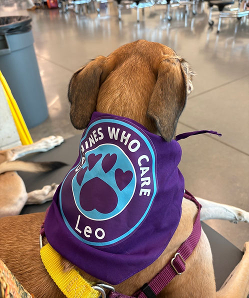

🐾Get to know us!
Beginning in 2012, our American Kennel Club Canine Good Citizen certified therapy dog group began with a shared vision: bringing the unconditional love of dogs to students and schools throughout Central Texas. What started as a small team of dedicated handlers and their dogs quickly grew into a community-focused organization, inspired by a passion for service and guided by a professional dog trainer who generously donated her time and expertise. Today, we continue to support and uplift our community one wagging tail at a time!
Our Purpose
- Providing therapy dog services to schools, hospitals, assisted living facilities, courts, and community organizations.
- Promoting emotional well-being through human-animal interaction.
- Supporting volunteer development and therapy dog training.
- Providing crisis response services through trained therapy dog teams.
- Conducting educational and community outreach activities throughout Central Texas.
Our Core Values
- Compassion: We approach every interaction with kindness and empathy.
- Safety: The safety of people and animals is our top priority.
- Respect: We respect all individuals, facilities, and community partners.
- Professionalism: Volunteers represent the program with professionalism and integrity.
- Animal Welfare: The comfort and well-being of therapy dogs always comes first.
- Community Service: We strengthen communities through meaningful volunteer service.
Serving Central Texas
- Austin
- Buda
- Kyle
- Smithville
- Bastrop
- Wimberley
- San Marcos
- Dripping Springs
- Johnson City